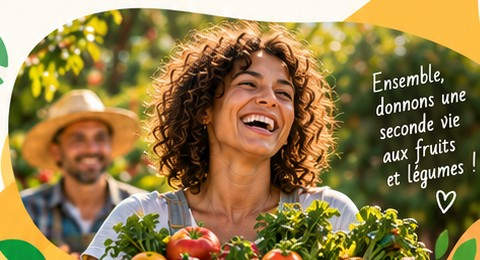

En vous inscrivant, vous devenez acteur d'une alimentation plus locale, plus solidaire et sans gaspillage. Rejoignez une communauté engagée !
Je m'inscris →
Remplissez ce formulaire pour rejoindre Les Rescapés du Verger et recevoir toutes les informations sur nos paniers, ateliers et actualités.
Accédez à des fruits et légumes locaux, frais et savoureux.
Rejoignez un réseau de citoyens, producteurs et associations.
Participez à des ateliers et événements concrets.